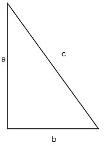

Satz des Pythagoras
Erklärung
Der Satz des Pythagoras beschreibt die Beziehung zwischen den Seiten eines rechtwinkligen Dreiecks. Er gilt nur, wenn ein Winkel genau 90° beträgt.
Formel
- $a$ = Kathete
- $b$ = Kathete
- $c$ = Hypotenuse (längste Seite)
- $a^2 + b^2 = c^2$
Beispiel
Wenn $a = 3$ und $b = 4$, dann: $c = \sqrt{25} = 5$
$3^2 + 4^2 = 9 + 16 = 25$
Anwendungen
- Berechnung unbekannter Seiten
- Mathematik und Geometrie
- Bauwesen und Technik
Skizze
